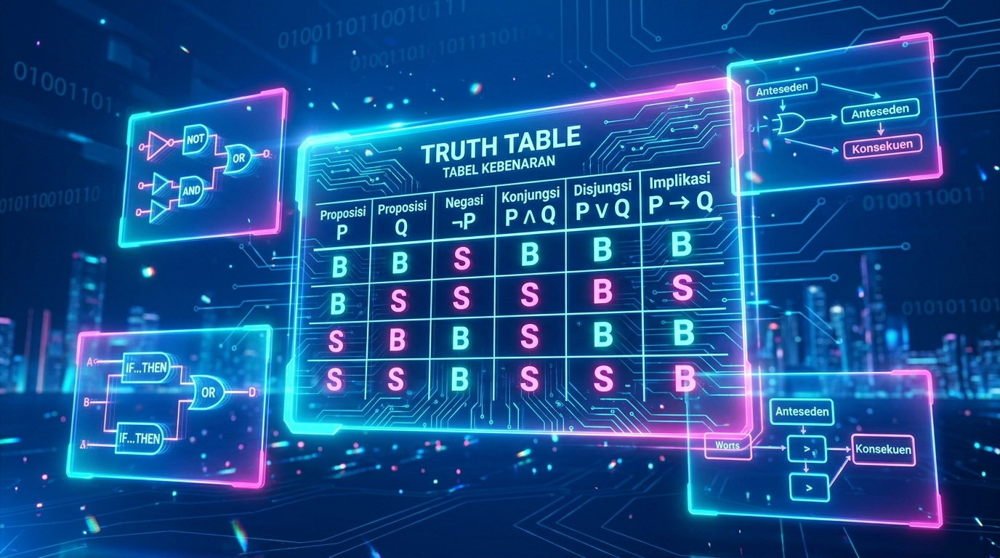

Media pembelajaran interaktif berbasis Informatika Kelas X SMK/MAK. Pelajari logika proposisi, metode penalaran deduktif/induktif, hingga konversi sistem bilangan secara visual dan responsif.

Proposisi adalah pernyataan yang menggambarkan keadaan benar (B) atau salah (S) dalam bentuk kalimat. Terdapat 4 unsur utama: Subjek, Predikat, Kopula, dan Kuantor.
Penalaran adalah proses berpikir berdasarkan pengamatan empiris untuk menghasilkan kesimpulan baru. Inferensi adalah proses penarikan kesimpulan berdasarkan fakta yang diketahui.
Sistem bilangan adalah cara mewakili besaran item fisik menggunakan basis angka tertentu dalam komputer dan perangkat elektronik.
Angka 0 - 9
Angka 0 & 1 (OFF/ON)
0-9 & A-F
Uji pemahaman dan lakukan perhitungan logika & konversi secara real-time di bawah ini.
Ubah status kebenaran input P dan Q untuk melihat hasil operasi logika secara otomatis.
Masukkan nilai desimal untuk mengonversi langsung ke bentuk Biner dan Heksadesimal.
Soal: Manakah jenis penalaran yang memilih kesimpulan terbaik dari sekian banyak argumentasi yang ada?